Python与深度学习的基础
NumPy的学习
1.NumPy的介绍
- NumPy是Python中用于科学计算的核心库。它是 Python 语言的一个扩展程序库，支持大量的多维数组与矩阵运算，并提供丰富的数学函数库。
- NumPy 的核心是
ndarray对象——一个功能强大的 N 维同构数组，封装了 n 维同类数据。大多数运算由底层编译代码（如 C/C++）执行，从而显著提升计算效率。该库包含多维数组和矩阵数据结构，提供了对ndarray进行高效操作的方法。
2.张量与数组的概念
在科学计算与深度学习中，“数组”和“张量”常常被用来描述数据结构，以下表格是对维度数据的介绍
维度 名称 特点描述 示例 0维 标量 只有一个数值，无方向 身高，体重 1维 向量 有大小有方向 数学中的坐标，通过Word2Vec后的词向量 2维 矩阵 有行和列组成的二维数组 灰度图像，二维表格 ≥ 3维 张量 三维及以上的数组，在深度学习中同称为任意维度是数组 彩色图像（高度，宽度，通道数），文本批次（批次大小，序列长度，词向量维度）
3.NumPy的常见使用
numpy的下载
conda install numpyorpip install numpynumpy库的调用
import numpy as np数组的创建
一维数组的创建,并查看该数组的形状与类型
a=np.array([1,2,3,4])a.shapea.dtype输出结果：a.shape=(4,);a.dtype=("int32")
二维数据的创建,并查看改数组的形状与类型
a1=np.array([[1,1,1],[2,2,2],[3,3,3]])使用a1.shape查看新建数组的形状结果维（3，3）
其他类型数组的创建
创建一个由零组成的数组
a=np.zeros(2，dtype=np.float64)==a=np.array([0,0],dtype=np.float64)创建一个以0填充的形状为（2，）的数组,类型为float64，该类型根据想要的数据需求设置。a.np.zeros((2,3))创建一个形状为2x3并且以0填充的二维数组创建一个有1组成的数组
a=np.ones(2,dtype=np.dtype64)输出结果:
array([1.,1.])a=np.ones((2,3))输出结果：
array([[1.,1.,1.],[1.,1.,1.]])使用函数empty创建一个数组，其初始内容是随机的，并且取决于内存的状态
a=np.empty(2)使用arange函数生成数组
a=np.arange(4)输出结果：
array([0,1,2,3])a=np.arange(1,9,2)表示：生成一个从1开始步长为2，到第9个数结束的一维数组
输出结果：
array([1,3,5,7])数组的排序
a=np.array([2,6,1,4,8])np.sort(a)输出结果：
array([1,2,4,6,8])数组的连接
a=np.array([[1,2],[3,4],[5,6]])b=np.array([[7,8]])c=np.concatenate((a,b),axis=0)输出结果：
array([[1,2],[3,4],[5,6],[7,8]])数组的访问（数组访问都是从0开始的）
一维数组的访问
a=np.array([2,6,1,4,8])a[0]结果为2a[0:2]结果为：array([2,6])a[-2:]结果为：array([4,8])二维数组的访问
a=np.array([[1,2],[3,4],[5,6]])a[0][1]==a[0,1]结果为2a[0,]结果为array([1,2])a[0:3,0]结果为array([1, 3, 5])b=a[a<5]结果为array([1, 2, 3, 4])数组的运算
数组的最基本的用法就是,直接使用"-","+","*","/"这些符号直接对数据进行运算,也就是相对应位置的加减乘除.
数组的其他求和运算方式
a=np.array([[1,1],[2,2]])输出结果:array([[1, 2], [1, 2]])
a.sum(axis=0)按数组的行轴进行求和.输出结果array([3, 3])a.sum(axis=1)按数组的列轴进行求和.输出结果array([2, 4])数组的最大值,最小值,总和
a.max(),a,min(),a.sum()查看数组中的唯一值
np.unique(a)输出结果为:array([1,2])数组的转置
a.T输出结果:array([[1, 2], [1, 2]])翻转数组
翻转一维数组
a=np.array([2,6,1,4,8])np.flip(a)输出结果: array([8,4,1,6,2])翻转二维数组
a=np.array([[1,1],[2,2]])输出结果: array([[1, 1],[2, 2]])np.flip(a)输出结果: array([[1, 1],[2, 2]]
保存与加载数组
np.savetxt("filename.csv",a,delimiter=",")以",分隔"np.load('filename.csv')
其他常见命令
代码 用途 a.shape查看数组a的形状 a.dtype查看数组a的类型 a.ndim查看数组的维数 a.size数组元素的总数(也就是数组中有多少个数) a=c.reshape(x,y)将数组的形状重新更改为x行y列
PyTorch的学习
1.PyTorch的介绍
- PyTorch 是一个开源的 Python 机器学习库，基于 Torch 库，底层由 C++ 实现，应用于人工智能领域，如计算机视觉和自然语言处理。PyTorch 最初由 Meta Platforms 的人工智能研究团队开发，现在属 于Linux 基金会的一部分。
- 许多深度学习软件都是基于 PyTorch 构建的，包括特斯拉自动驾驶、Uber 的 Pyro、Hugging Face 的 Transformers、 PyTorch Lightning 和 Catalyst。
- PyTorch 主要有两大特征：类似于 NumPy 的张量计算，能在 GPU 或 MPS 等硬件加速器上加速。基于带自动微分系统的深度神经网络。PyTorch 包括 torch.autograd、torch.nn、torch.optim 等子模块。 PyTorch 包含多种损失函数，包括 MSE（均方误差 = L2 范数）、交叉熵损失和负熵似然损失（对分类器有用）等。
2.Pytorch的常见用法
torch的安装
conda install torchorpip insatll torch安装不成功可以去网上找镜像
查看是否安装成功
print("PyTorch 版本"，torch._version_)输出结果：
PyTorch 版本: 1.13.1+cpu创建张量
xxxxxxxxxx31# 从列表创建2x = torch.tensor([1, 2, 3, 4])3print("从列表创建:", x)输出结果：
从列表创建: tensor([1, 2, 3, 4])这个与numpy的创建数组一样的语法xxxxxxxxxx31# 创建全一张量2ones = torch.ones(2, 3)3print("全一张量:\n", ones)输出结果：
tensor([[1., 1., 1.],[1., 1., 1.]])xxxxxxxxxx31# 创建随机张量2rand_tensor = torch.rand(2, 3)3print("随机张量:\n", rand_tensor)输出结果：
tensor([[0.6817, 0.5395, 0.3635],[0.7416, 0.4544, 0.3653]])xxxxxxxxxx31# 创建范围张量2arange = torch.arange(0, 10, 2)3print("范围张量:", arange)输出结果：
tensor([0, 2, 4, 6, 8])张量的属性
xxxxxxxxxx51tensor = torch.rand(3, 4)2print("张量形状:", tensor.shape)3print("张量维度:", tensor.dim())4print("张量数据类型:", tensor.dtype)5print("张量设备:", tensor.device)输出结果：张量形状: torch.Size([3, 4])
张量维度: 2
张量数据类型: torch.float32
张量设备: cpu
张量是基本运算
xxxxxxxxxx101#这些就像是对张量的相对于位置进行运算2a = torch.tensor([1, 2, 3])3b = torch.tensor([4, 5, 6])4print("a =", a)5print("b =", b)6print("a + b =", a + b)7print("a - b =", a - b)8print("a * b =", a * b) # 逐元素乘法9print("a / b =", a / b)10print("a ** 2 =", a ** 2)输出结果：
a = tensor([1, 2, 3]),b = tensor([4, 5, 6]),a + b = tensor([5, 7, 9])a - b = tensor([-3, -3, -3]),a * b = tensor([ 4, 10, 18]),a/ b = tensor([0.2500, 0.4000, 0.5000]),a ** 2 = tensor([1, 4, 9])矩阵乘法
xxxxxxxxxx41matrix_a = torch.rand(2, 3)2matrix_b = torch.rand(3, 2)3matrix_product = torch.matmul(matrix_a, matrix_b)4print(f"矩阵乘法: {matrix_a.shape} @ {matrix_b.shape} = {matrix_product.shape}")输出结果：
矩阵乘法: torch.Size([2, 3]) @ torch.Size([3, 2]) = torch.Size([2, 2])
修改张量的形状
xxxxxxxxxx41tensor = torch.arange(12)2reshaped = tensor.reshape(3, 4)3print("原始张量:", tensor)4print("reshape(3, 4):\n", reshaped)输出结果：
原始张量: tensor([ 0, 1, 2, 3, 4, 5, 6, 7, 8, 9, 10, 11])xxxxxxxxxx41reshape(3, 4):2tensor([[ 0, 1, 2, 3],3[ 4, 5, 6, 7],4[ 8, 9, 10, 11]])xxxxxxxxxx31# 使用view方法也可以改变张量的形状2viewed = tensor.view(3, 4)3print("view(3, 4):\n", viewed)输出结果：
xxxxxxxxxx41view(3, 4):2tensor([[ 0, 1, 2, 3],3[ 4, 5, 6, 7],4[ 8, 9, 10, 11]])
张量的转置
xxxxxxxxxx21transposed = reshaped.T2print("转置:\n", transposed)输出结果：
xxxxxxxxxx51转置:2tensor([[ 0, 4, 8],3[ 1, 5, 9],4[ 2, 6, 10],5[ 3, 7, 11]])张量的索引与切片
xxxxxxxxxx51tensor = torch.arange(24).reshape(4, 6)2print("原始张量:\n", tensor)3print("第一行:", tensor[0])4print("第一列:", tensor[:, 0])5print("子矩阵:\n", tensor[1:3, 2:4])输出结果：
xxxxxxxxxx41tensor([[ 0, 1, 2, 3, 4, 5],2[ 6, 7, 8, 9, 10, 11],3[12, 13, 14, 15, 16, 17],4[18, 19, 20, 21, 22, 23]])第一行: tensor([0, 1, 2, 3, 4, 5])第一列: tensor([ 0, 6, 12, 18])子矩阵:
tensor([[ 8, 9], [14, 15]])
单变量的求导
x
1x = torch.tensor(2.0, requires_grad=True)2y = x ** 2 + 3 * x + 13y.backward()4print(f"x = {x}, y = {y}")5print(f"dy/dx = {x.grad}")输出结果：
x = 2.0, y = 11.0,dy/dx = 7.0多变量的求导
requires_grad是一个布尔标志，用于控制是否计算该张量的梯度：requires_grad=True: 启用梯度计算（用于训练）requires_grad=False: 禁用梯度计算（用于推理/预测）1x1 = torch.tensor(1.0, requires_grad=True)2x2 = torch.tensor(2.0, requires_grad=True)3z = x1 ** 2 + x1 * x2 + x2 ** 24z.backward()5print(f"\n多变量函数: z = x1² + x1*x2 + x2²")6print(f"∂z/∂x1 = {x1.grad}")7print(f"∂z/∂x2 = {x2.grad}")输出结果：
多变量函数: z = x1² + x1*x2 + x2²,∂z/∂x1 = 4.0,∂z/∂x2 = 5.0梯度清零
x
1x1.grad.zero_()2x2.grad.zero_()3print(f"x1.grad = {x1.grad}")4print(f"x2.grad = {x2.grad}")输出结果：
x1.grad = 0.0,x2.grad = 0.0神经网路的基础
1import torch.nn as nn2import torch.nn.functional as F34# 定义简单的神经网络5class SimpleNet(nn.Module):6def __init__(self):7super(SimpleNet, self).__init__()8self.fc1 = nn.Linear(10, 5) # 输入10维，输出5维9self.fc2 = nn.Linear(5, 2) # 输入5维，输出2维10self.relu = nn.ReLU()1112def forward(self, x):13x = self.relu(self.fc1(x))14x = self.fc2(x)15return x1617# 创建网络实例18model = SimpleNet()19print("网络结构:")20print(model)2122# 查看参数23print("\n网络参数:")24for name, param in model.named_parameters():25print(f"{name}: {param.shape}")2627# 前向传播28input_data = torch.randn(1, 10) # batch_size=1, input_size=1029output = model(input_data)30print(f"\n输入形状: {input_data.shape}")31print(f"输出形状: {output.shape}")32print(f"输出: {output}")输出结果：

损失函数与优化器
x
1# 损失函数2criterion = nn.CrossEntropyLoss()34优化器5optimizer = torch.optim.SGD(model.parameters(), lr=0.01)67模拟训练步骤8print("模拟训练过程:")910#模拟数据11inputs = torch.randn(4, 10) # batch_size=4, input_size=1012labels = torch.tensor([0, 1, 0, 1]) # 4个样本的标签1314# 前向传播15outputs = model(inputs)16loss = criterion(outputs, labels)1718print(f"初始损失: {loss.item():.4f}")1920# 反向传播21optimizer.zero_grad() # 梯度清零22loss.backward() # 反向传播23optimizer.step() # 更新参数2425# 再次前向传播查看损失变化26outputs_after = model(inputs)27loss_after = criterion(outputs_after, labels)28print(f"一次更新后损失: {loss_after.item():.4f}")输出结果：模拟训练过程:初始损失: 0.6784，一次更新后损失: 0.6751
加载数据集
xxxxxxxxxx1321from torch.utils.data import Dataset, DataLoader23print("\n=== 数据集和数据加载器 ===")45# 自定义数据集6class CustomDataset(Dataset):7def __init__(self, data, labels):8self.data = data9self.labels = labels1011def __len__(self):12return len(self.data)1314def __getitem__(self, idx):15return self.data[idx], self.labels[idx]1617# 创建模拟数据18data = torch.randn(100, 10) # 100个样本，每个10维19labels = torch.randint(0, 2, (100,)) # 100个二分类标签2021dataset = CustomDataset(data, labels)22dataloader = DataLoader(dataset, batch_size=8, shuffle=True)2324print(f"数据集大小: {len(dataset)}")25print(f"数据加载器批次数: {len(dataloader)}")2627# 遍历数据加载器28print("\n遍历前3个批次:")29for i, (batch_data, batch_labels) in enumerate(dataloader):30print(f"批次 {i+1}: 数据形状 {batch_data.shape}, 标签形状 {batch_labels.shape}")31if i == 2: # 只显示前3个批次32break输出结果：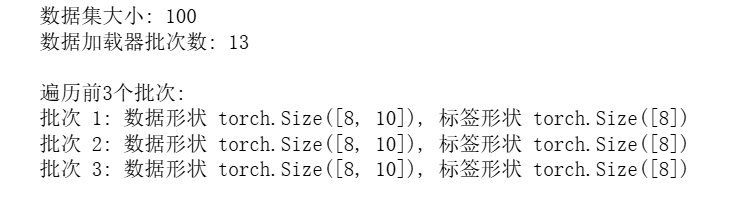
模型训练
xxxxxxxxxx1741print("\n=== 完整训练示例 ===")23# 准备数据4def generate_data(n_samples=1000):5"""生成简单的二分类数据"""6X = torch.randn(n_samples, 2)7# 根据到原点的距离创建标签8y = (X[:, 0]**2 + X[:, 1]**2 > 1).long()9return X, y1011X, y = generate_data(1000)1213# 分割训练集和测试集14train_size = int(0.8 * len(X))15X_train, X_test = X[:train_size], X[train_size:]16y_train, y_test = y[:train_size], y[train_size:]1718print(f"训练集: {X_train.shape}, 测试集: {X_test.shape}")1920# 定义模型21class Classifier(nn.Module):22def __init__(self):23super(Classifier, self).__init__()24self.fc1 = nn.Linear(2, 10)25self.fc2 = nn.Linear(10, 5)26self.fc3 = nn.Linear(5, 2)27self.relu = nn.ReLU()2829def forward(self, x):30x = self.relu(self.fc1(x))31x = self.relu(self.fc2(x))32x = self.fc3(x)33return x3435model = Classifier()36criterion = nn.CrossEntropyLoss()37optimizer = torch.optim.Adam(model.parameters(), lr=0.01)3839# 训练循环40def train_model(model, X_train, y_train, epochs=100):41model.train()42losses = []4344for epoch in range(epochs):45# 前向传播46outputs = model(X_train)47loss = criterion(outputs, y_train)4849# 反向传播50optimizer.zero_grad()51loss.backward()52optimizer.step()5354losses.append(loss.item())5556if epoch % 20 == 0:57print(f'Epoch [{epoch}/{epochs}], Loss: {loss.item():.4f}')5859return losses6061print("开始训练...")62losses = train_model(model, X_train, y_train, epochs=100)6364# 评估模型65def evaluate_model(model, X_test, y_test):66model.eval()67with torch.no_grad():68outputs = model(X_test)69_, predicted = torch.max(outputs, 1)70accuracy = (predicted == y_test).float().mean()71return accuracy.item()7273accuracy = evaluate_model(model, X_test, y_test)74print(f"测试集准确率: {accuracy:.4f}")输出结果：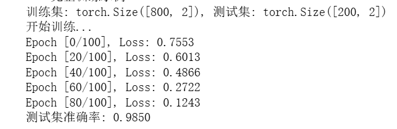
模型的保存和加载
xxxxxxxxxx1151# 保存模型2torch.save(model.state_dict(), 'model.pth')3print("模型已保存为 'model.pth'")45# 加载模型6new_model = Classifier()7new_model.load_state_dict(torch.load('model.pth'))8new_model.eval()9print("模型加载成功")1011# 测试加载的模型12accuracy_loaded = evaluate_model(new_model, X_test, y_test)13print(f"加载模型的测试准确率: {accuracy_loaded:.4f}")输出结果：

3.PyTorch 在MNIST和CIFAR上的使用
PyTorch在MNIST数据集上的使用
x
1import torch2import torch.nn as nn3import torch.optim as optim4from torch.utils.data import DataLoader, TensorDataset5from tensorflow.keras.datasets import mnist6import numpy as np78# 设备配置9device = torch.device("cuda" if torch.cuda.is_available() else "cpu")1011# 超参数12batch_size = 6413learning_rate = 0.0114num_epochs = 51516# 使用 Keras 加载 MNIST 数据17(x_train, y_train), (x_test, y_test) = mnist.load_data()1819# 数据预处理（归一化 + 增加通道维度 + 转换为 float32）20x_train = x_train.astype(np.float32) / 255.0 # [60000, 28, 28]21x_test = x_test.astype(np.float32) / 255.0 # [10000, 28, 28]2223# 添加通道维度：[N, H, W] → [N, 1, H, W]24x_train = np.expand_dims(x_train, axis=1) # 变成 [60000, 1, 28, 28]25x_test = np.expand_dims(x_test, axis=1) # [10000, 1, 28, 28]2627y_train = y_train.astype(np.int64)28y_test = y_test.astype(np.int64)2930# 转换为 PyTorch Tensor31x_train_tensor = torch.from_numpy(x_train)32y_train_tensor = torch.from_numpy(y_train)33x_test_tensor = torch.from_numpy(x_test)34y_test_tensor = torch.from_numpy(y_test)3536# 创建 Dataset 和 DataLoader37train_dataset = TensorDataset(x_train_tensor, y_train_tensor)38test_dataset = TensorDataset(x_test_tensor, y_test_tensor)3940train_loader = DataLoader(train_dataset, batch_size=batch_size, shuffle=True)41test_loader = DataLoader(test_dataset, batch_size=batch_size, shuffle=False)4243# 定义简单44class Net(nn.Module):45def __init__(self):46super(Net, self).__init__()47self.flatten = nn.Flatten()48self.fc1 = nn.Linear(28 * 28, 128)49self.fc2 = nn.Linear(128, 64)50self.fc3 = nn.Linear(64, 10)51self.relu = nn.ReLU()5253def forward(self, x):54x = self.flatten(x) # [B, 1, 28, 28] → [B, 784]55x = self.relu(self.fc1(x))56x = self.relu(self.fc2(x))57x = self.fc3(x)58return x5960model = Net().to(device)6162# 损失函数和优化器63criterion = nn.CrossEntropyLoss()64optimizer = optim.SGD(model.parameters(), lr=learning_rate)6566# 训练函数67def train():68model.train()69for epoch in range(num_epochs):70for batch_idx, (data, target) in enumerate(train_loader):71data, target = data.to(device), target.to(device)72optimizer.zero_grad()73output = model(data)74loss = criterion(output, target)75loss.backward()76optimizer.step()7778if batch_idx % 100 == 0:79print(f'Epoch [{epoch+1}/{num_epochs}], Step [{batch_idx}/{len(train_loader)}], Loss: {loss.item():.4f}')8081# 测试函数82def test():83model.eval()84correct = 085total = 086with torch.no_grad():87for data, target in test_loader:88data, target = data.to(device), target.to(device)89output = model(data)90pred = output.argmax(dim=1)91correct += pred.eq(target).sum().item()92total += target.size(0)93print(f'Test Accuracy: {100. * correct / total:.2f}%')9495# 执行96if __name__ == "__main__":97train()98test()输出结果：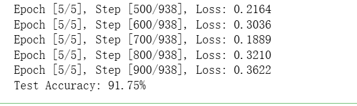
PyTorch在CIFAR数据集上的使用
x
1import torch2import torch.nn as nn3import torch.optim as optim4import torch.nn.functional as F5from torch.utils.data import DataLoader, TensorDataset6import numpy as np7import matplotlib.pyplot as plt8from tensorflow.keras.datasets import cifar10910#画图时将中文呈现出来11plt.rcParams['font.sans-serif'] = ['SimHei']12plt.rcParams['axes.unicode_minus']=False1314# 设置设备15device = torch.device("cuda" if torch.cuda.is_available() else "cpu")16print(f"使用设备: {device}")1718# 从Keras加载CIFAR-10数据集19print("从Keras加载CIFAR-10数据集...")20(x_train, y_train), (x_test, y_test) = cifar10.load_data()2122# 数据预处理23# 归一化到0-1范围24x_train = x_train.astype('float32') / 255.025x_test = x_test.astype('float32') / 255.02627# 将标签从二维展平为一维28y_train = y_train.flatten()29y_test = y_test.flatten()3031# 将numpy数组转换为PyTorch张量32# 注意：需要调整维度顺序 (H, W, C) -> (C, H, W)33x_train_tensor = torch.tensor(x_train).permute(0, 3, 1, 2)34x_test_tensor = torch.tensor(x_test).permute(0, 3, 1, 2)35y_train_tensor = torch.tensor(y_train, dtype=torch.long)36y_test_tensor = torch.tensor(y_test, dtype=torch.long)3738print(f"训练集形状: {x_train_tensor.shape}")39print(f"测试集形状: {x_test_tensor.shape}")40print(f"训练标签形状: {y_train_tensor.shape}")4142# 创建PyTorch数据集43train_dataset = TensorDataset(x_train_tensor, y_train_tensor)44test_dataset = TensorDataset(x_test_tensor, y_test_tensor)4546# 创建数据加载器47batch_size = 12848train_loader = DataLoader(train_dataset, batch_size=batch_size, shuffle=True)49test_loader = DataLoader(test_dataset, batch_size=batch_size, shuffle=False)5051# CIFAR-10类别名称52classes = ('airplane', 'automobile', 'bird', 'cat', 'deer',53'dog', 'frog', 'horse', 'ship', 'truck')5455# 显示一些样本图像56def show_sample_images():57# 获取一个batch的数据58dataiter = iter(train_loader)59images, labels = next(dataiter)6061# 显示前8张图像62fig, axes = plt.subplots(2, 4, figsize=(12, 6))63for i in range(8):64ax = axes[i//4, i%4]65# 调整维度顺序 (C, H, W) -> (H, W, C) 用于显示66image = images[i].permute(1, 2, 0).numpy()67ax.imshow(image)68ax.set_title(classes[labels[i].item()])69ax.axis('off')70plt.tight_layout()71plt.show()7273show_sample_images()7475# 定义一个简单的CNN模型76class SimpleCNN(nn.Module):77def __init__(self, num_classes=10):78super(SimpleCNN, self).__init__()79self.conv1 = nn.Conv2d(3, 32, 3, padding=1) # 输入通道3，输出通道3280self.conv2 = nn.Conv2d(32, 64, 3, padding=1)81self.pool = nn.MaxPool2d(2, 2) # 2x2最大池化82self.fc1 = nn.Linear(64 * 8 * 8, 512) # CIFAR-10经过两次池化后是8x883self.fc2 = nn.Linear(512, num_classes)84self.dropout = nn.Dropout(0.25)8586def forward(self, x):87x = self.pool(F.relu(self.conv1(x))) # 32x32 -> 16x1688x = self.pool(F.relu(self.conv2(x))) # 16x16 -> 8x889x = x.view(-1, 64 * 8 * 8) # 展平90x = F.relu(self.fc1(x))91x = self.dropout(x)92x = self.fc2(x)93return x9495# 创建模型96model = SimpleCNN().to(device)97print("模型结构:")98print(model)99100# 定义损失函数和优化器101criterion = nn.CrossEntropyLoss()102optimizer = optim.Adam(model.parameters(), lr=0.001)103104# 训练函数105def train_epoch(model, train_loader, criterion, optimizer):106model.train()107running_loss = 0.0108correct = 0109total = 0110111for batch_idx, (inputs, targets) in enumerate(train_loader):112inputs, targets = inputs.to(device), targets.to(device)113114# 前向传播115optimizer.zero_grad()116outputs = model(inputs)117loss = criterion(outputs, targets)118119# 反向传播120loss.backward()121optimizer.step()122123# 统计124running_loss += loss.item()125_, predicted = outputs.max(1)126total += targets.size(0)127correct += predicted.eq(targets).sum().item()128129if batch_idx % 100 == 0:130print(f'Batch: {batch_idx}/{len(train_loader)}, Loss: {loss.item():.3f}')131132epoch_loss = running_loss / len(train_loader)133epoch_acc = 100. * correct / total134return epoch_loss, epoch_acc135136# 测试函数137def test_model(model, test_loader, criterion):138model.eval()139test_loss = 0.0140correct = 0141total = 0142143with torch.no_grad():144for inputs, targets in test_loader:145inputs, targets = inputs.to(device), targets.to(device)146outputs = model(inputs)147loss = criterion(outputs, targets)148149test_loss += loss.item()150_, predicted = outputs.max(1)151total += targets.size(0)152correct += predicted.eq(targets).sum().item()153154test_loss = test_loss / len(test_loader)155test_acc = 100. * correct / total156return test_loss, test_acc157158# 开始训练159num_epochs = 10160print("开始训练...")161162train_losses = []163train_accs = []164test_losses = []165test_accs = []166167for epoch in range(1, num_epochs + 1):168print(f'\nEpoch {epoch}/{num_epochs}')169print('-' * 40)170171# 训练172train_loss, train_acc = train_epoch(model, train_loader, criterion, optimizer)173train_losses.append(train_loss)174train_accs.append(train_acc)175176# 测试177test_loss, test_acc = test_model(model, test_loader, criterion)178test_losses.append(test_loss)179test_accs.append(test_acc)180181print(f'训练损失: {train_loss:.4f}, 训练准确率: {train_acc:.2f}%')182print(f'测试损失: {test_loss:.4f}, 测试准确率: {test_acc:.2f}%')183184# 绘制训练曲线185plt.figure(figsize=(12, 4))186187plt.subplot(1, 2, 1)188plt.plot(train_losses, label='训练损失')189plt.plot(test_losses, label='测试损失')190plt.xlabel('Epoch')191plt.ylabel('Loss')192plt.legend()193plt.title('损失曲线')194195plt.subplot(1, 2, 2)196plt.plot(train_accs, label='训练准确率')197plt.plot(test_accs, label='测试准确率')198plt.xlabel('Epoch')199plt.ylabel('Accuracy (%)')200plt.legend()201plt.title('准确率曲线')202203plt.tight_layout()204plt.show()205206# 显示一些测试结果207def show_test_results():208model.eval()209dataiter = iter(test_loader)210images, labels = next(dataiter)211images, labels = images.to(device), labels.to(device)212213with torch.no_grad():214outputs = model(images)215_, predicted = outputs.max(1)216217# 显示前12个测试结果218images = images.cpu()219fig, axes = plt.subplots(3, 4, figsize=(12, 9))220221for i in range(12):222ax = axes[i//4, i%4]223image = images[i].permute(1, 2, 0).numpy()224ax.imshow(image)225226# 绿色表示正确，红色表示错误227color = 'green' if predicted[i] == labels[i] else 'red'228ax.set_title(f'True: {classes[labels[i]]}\nPred: {classes[predicted[i]]}',229color=color, fontsize=10)230ax.axis('off')231232plt.suptitle('测试结果（绿色:正确, 红色:错误）')233plt.tight_layout()234plt.show()235236show_test_results()237238# 计算最终准确率239final_test_loss, final_test_acc = test_model(model, test_loader, criterion)240print(f'\n最终测试准确率: {final_test_acc:.2f}%')241242# 保存模型243torch.save(model.state_dict(), 'cifar10_simple_model.pth')244print("模型已保存为 'cifar10_simple_model.pth'")输出结果：
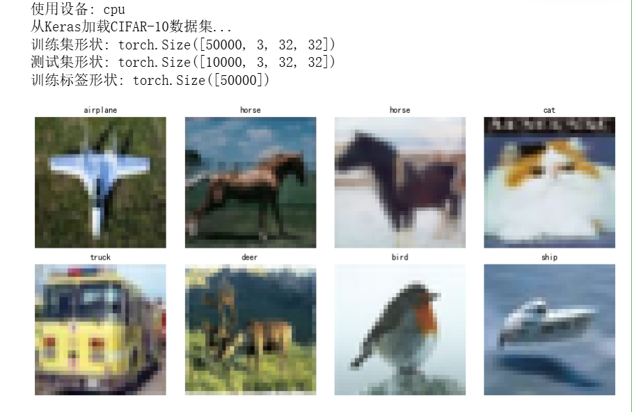

训练数据结果：
轮次 训练准确率 训练准确率 1 45.45% 56.24% 2 59.61% 63.93% 3 67.03% 67.03% 4 69.24% 69.24% 5 72.39% 70.50% 6 75.42% 71.01% 7 77.89% 71.51% 8 80.56% 72.51% 9 83.04% 72.20% 10 85.22% 73.26% 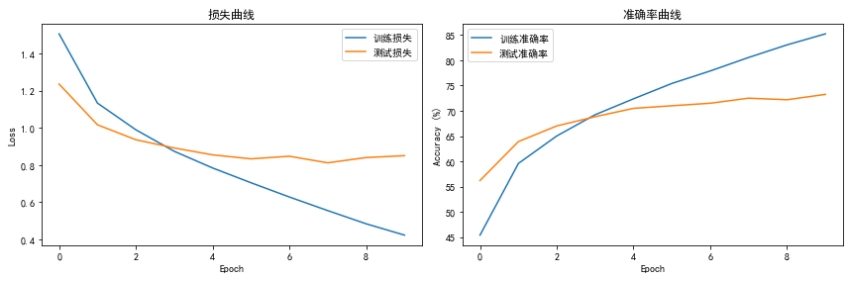
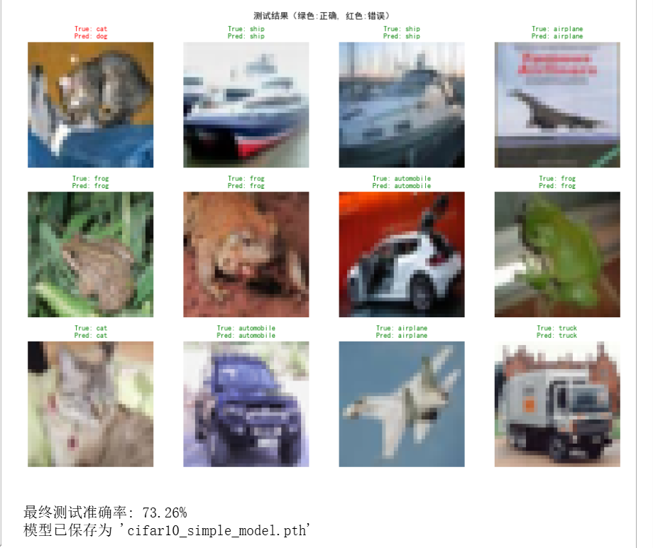
Pandas的学习
1.Pandas的介绍
- 简单来说pandas是专门为数据分析而设计的，其提供了两种主要的数据结构Series（一维数组）和DataFrame数据框(2维表格)
- pandas的主要作用为进行数据的读取，对数据进行清洗，数据转换。安装方式为
pip install pandasorconda intall pandas
2.Pandas的实际运用
pandas的导入
import pandas as pd读取数据
data=pd.read_csv('data(2000-4000)_new_label(NoC01_minus1).csv')数据展示

a.shape输出结果:(17996,4)
a.dtypes输出结果:

2.1.读取学生成绩数据
加载数据
students = pd.read_csv("学生成绩.csv")`students.head()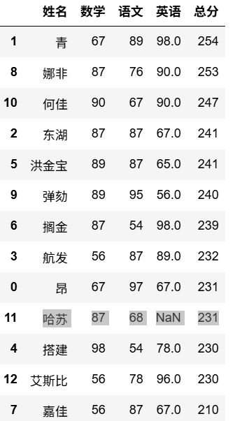
students.info()#数据概况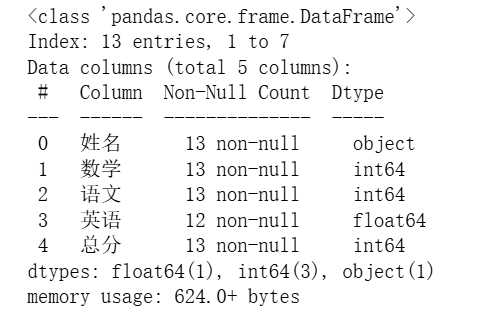
student.describe()#统计摘要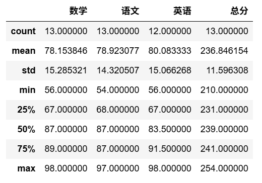
2.2.数据预处理
查看是否有缺失值
students.isnull().sum()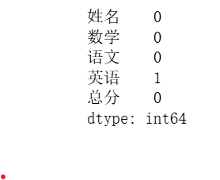
填充缺失值
students.fillna(value=69)
或者删除缺失值
students.dropna()查看是否有重复的值
student.duplicated()该数据没有重复的值如果有就用
student.drop_duplicates()
2.3.数据可视化
简单的柱状图
import pandas as pdimport matplotlib.pyplot as pltplt.rcParams['font.sans-serif']=['SimHei']student.plot(x='姓名',y='总分',kind='bar')plt.show()
简单折线图
student.plot(x='姓名',y='总分',kind='line')plt.show()
简单散点图
student.plot(x='姓名',y='总分',kind='scatter')plt.show()
matplotlib的常见命令
1.以下表格展示了matplotlib的常用命令
| 示例 | 说明 |
|---|---|
fig = plt.figure(figsize=None， dpi=None) | 一个没有坐标轴的空图形 |
fig.suptitle("画板标题") | 画板添加大标题 |
fig, ax = plt.subplots() | 一个带有单个坐标轴的图形 |
fig, axs = plt.subplots(2, 2) | 一个带有2x2网格坐标轴的图形 |
fig, axs = plt.subplots(2, 2,1) | 在2x2的网格坐标中画第一幅图 |
axs.imshow()，ax.imshow(train_images[i],cmap='gray') | 将图像数据添加到坐标轴中，但不会立即显示 类似: 像在画布上作画，但还没有展示给观众看 |
plt.tight_layout() | Matplotlib 中一个非常实用的自动布局调整函数，用于解决子图重叠、标签被截断等问题 |
ax=fig.add_subplot(7,7,i+1) | 第一个7是7行的意思，减小第一个数据输出图像的行距变大，增大第一个数据行距变小当第一个数据大于第二个数据的时候图像整体会变小 |
ax = fig.add_subplot(参数1，参数2，参数3) | 参数1 和参数2是用来对画板划分；参数3指的是 ax 指的是第几部分 |
ax.set_title('示例图形') | 这个方法可以设置这条曲线叫什么，或者这个图形的名称 |
ax.set_title("数字：{}".format(train_labels[i])) | 对某一幅图给一个“数字i”的标题，其中i是训练集的第i个标签 |
ax.set_xlabel('X轴') | 对x轴命名，x轴标签 |
ax.set_ylabel('Y轴') | 对y轴命名，y轴标签 |
line, = ax.plot(x, y, label='正弦曲线') | 画折线图,label这个变量就是对这条线命名就像训练集和测试集 |
ax.legend() | 添加图例 |
ax.set_xlim(0, 10) | x轴的范围从0到10 |
ax.set_ylim(0, 10) | y轴从0到10 |
ax.set_xticks([0, 5, 10]) | 显示x轴的刻度 |
ax.set_yticks([-1, 0, 1]) | 显示y轴的刻度 |
ax.set_xticklabels(['起始', '中间', '结束']) | 给x轴的刻度显示三个标签 |
ax.set_yticklabels(['低', '中', '高']) | 给y轴的刻度显示三个标签 |
x_axis = ax.xaxis | 获取x轴对象 |
y_axis = ay.xaxis | 获取y轴对象 |
np.random.seed(19680801) | 设置随机数生成器的种子以确保随机数据可重现 |
ax.plot(x, y, color='orange', linewidth=2，marker="^"，linestyle="--")或者ax.plot(x, y,"^--r") | 画折线图，color折线的颜色，linewidth线宽，marker="^"点形状，linestyle="--"线形状 |
ax.scatter('a', 'b', c='c', s='d', data=data) | 画汽包图，x轴数据来自'a'键，y轴数据来自'b'键，点的颜色由'c'键的值决定，点的大小由'd'键的值决定 |
plt.bar(X,Y) | 柱状图 |
plt.hist(array) | 画直方图，array是一维数据 |
plt.pie(data,lables=,autopct='%1.1f%%') | 饼图 |
plt.boxplot(X,Y) | 箱状图 |
plt.show() | 显示图像 |
神经网络在MNIST和CIFAR数据集上的实际运用
此次运行的代码是使用jupyter notebook软件运行的
神经网络对MNIST数据集的分类
1. 调用相关的库，以及加载数据
x1import numpy as np2import pandas as pd3import matplotlib.pyplot as plt4import tensorflow as tf5from tensorflow import keras6from tensorflow.keras.callbacks import EarlyStopping7import itertools8import seaborn as sns910#画图时将中文呈现出来11plt.rcParams['font.sans-serif'] = ['SimHei']12plt.rcParams['axes.unicode_minus']=False1314#MNIST数据集在keras这个库里面就可以加载出来15mnist=keras.datasets.mnist#读取数据1617(train_images,train_labels),(test_images,test_labels)=mnist.load_data()#加载数据1819print('train_images',train_images.shape)20print('train_label',train_labels.shape)21print('test_images',test_images.shape)22print('test_label',test_labels.shape)
输出结果
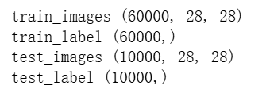
xxxxxxxxxx81fig=plt.figure(figsize=(20,20))2fig.suptitle("数据展示")3for i in range(14):4 ax=fig.add_subplot(7,7,i+1)5 ax.imshow(train_images[i],cmap='gray')6 plt.tight_layout()7 ax.set_title("数字：{}".format(train_labels[i]))8plt.show()输出结果：

2.数据预处理
xxxxxxxxxx41train_x=train_images/2552test_x=test_images/2553print('train_x.shape',train_x.shape)4print("test_x.shape",test_x.shape)
输出结果：
train_x.shape (60000, 28, 28)
test_x.shape (10000, 28, 28)
xxxxxxxxxx51#修改图片的形状2train_x1=tf.reshape(train_x,[train_x.shape[0],train_x.shape[1]*train_x.shape[2]])3test_x1=tf.reshape(test_x,[test_x.shape[0],test_x.shape[1]*test_x.shape[2]])4print('train_x1.shape',train_x1.shape)5print('test_x1.shape',test_x1.shape)
输出结果：
train_x1.shape (60000, 784)
test_x1.shape (10000, 784)
xxxxxxxxxx51#标签的数据预处理2train_Y=tf.one_hot(train_labels,depth=10)3test_Y=tf.one_hot(test_labels,depth=10)4print(train_labels[0],train_Y[0].numpy())5train_Y
输出结果：
5 [0. 0. 0. 0. 0. 1. 0. 0. 0. 0.]
3.模型的训练与评估
x1#网络的搭建2from tensorflow import keras3from tensorflow.keras.models import Sequential4from tensorflow.keras.layers import Dense,Conv2D,MaxPooling2D,Flatten56model = keras.Sequential(7[keras.layers.Dense(units=256,input_shape=(784,),activation='relu'),8#units=256输入层神经元个数9keras.layers.Dense(units=128,activation='relu'),10keras.layers.Dropout(0.5),#改进11keras.layers.BatchNormalization(),#改进12keras.layers.Dense(units=10,activation='softmax')]13)14model.summary()
输出结果：

xxxxxxxxxx61#编译模型与训练网路2from tensorflow.keras.callbacks import EarlyStopping34model.compile(optimizer='adam',loss='categorical_crossentropy',metrics=['accuracy'])5stop = EarlyStopping(monitor="val_accuracy",min_delta=0.00001,patience = 3)6history=model.fit(train_x1,train_Y,epochs=20,verbose=2,validation_split=0.2,callbacks=[stop])
输出结果:
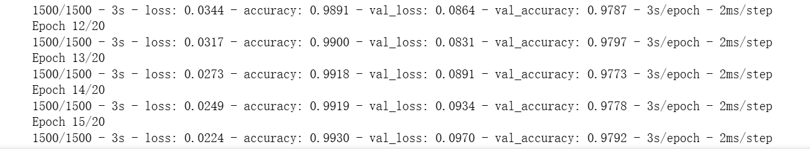
4.结果可视化
xxxxxxxxxx191def drow_model(training):2plt.figure()3plt.subplot(2,1,1)4plt.plot(training.history['accuracy'])5plt.plot(training.history['val_accuracy'])6plt.title("model accuracy")7plt.ylabel('accuracy')8plt.xlabel('epoch')9plt.legend(['train','test'],loc='lower right')10plt.subplot(2,1,2)11plt.plot(training.history['loss'])12plt.plot(training.history['val_loss'])13plt.title("model loss")14plt.ylabel('loss')15plt.xlabel('epoch')16plt.legend(['train','test'],loc='upper right')17plt.tight_layout()18plt.show()19drow_model(history)
输出结果：

结果显示模型过拟合，所以加入Dropout层和批次归一化之后的输出结果为
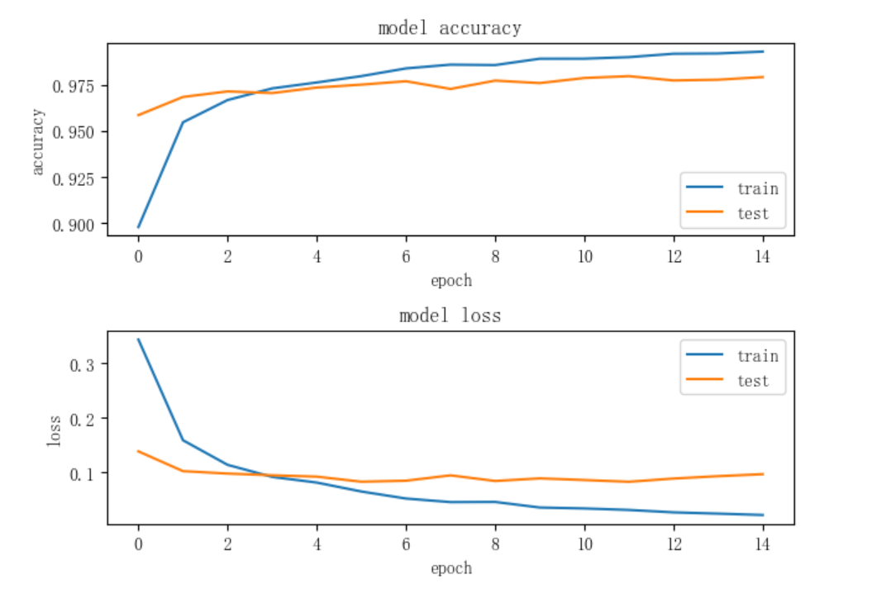
神经网络在CIFAR数据上的分类
1.库的调用与数据的加载
xxxxxxxxxx191import numpy as np2import pandas as pd3import matplotlib.pyplot as plt4import tensorflow as tf5from tensorflow import keras6from tensorflow.keras.callbacks import EarlyStopping7import itertools8import seaborn as sns910plt.rcParams['font.sans-serif'] = ['SimHei']11plt.rcParams['axes.unicode_minus']=False1213cifar10=keras.datasets.cifar10#读取数据14(train_images,train_labels),(test_images,test_labels)=cifar10.load_data()#加载数据1516print('train_images',train_images.shape)17print('train_label',train_labels.shape)18print('test_images',test_images.shape)19print('test_label',test_labels.shape)
输出结果：
train_images (50000, 32, 32, 3)
train_label (50000, 1)
test_images (10000, 32, 32, 3)
test_label (10000, 1)
xxxxxxxxxx111#对数据图像进行可视化2fig=plt.figure(figsize=(20,20))3fig.suptitle("数据展示")4for i in range(14):5ax=fig.add_subplot(7,7,i+1)6fig.set_figheight(15)7fig.set_figwidth(15)8ax.imshow(train_images[i],)9plt.tight_layout()10ax.set_title("图片：{}".format(train_labels[i]))11plt.show()
输出结果：

2.数据的预处理
xxxxxxxxxx51#对图像进行预处理2train_x=train_images/2553test_x=test_images/2554print('train_x.shape',train_x.shape)5print("test_x.shape",test_x.shape)
输出结果：
train_x.shape (50000, 32, 32, 3)
test_x.shape (10000, 32, 32, 3)
xxxxxxxxxx51#修改数据的形状2train_x1=tf.reshape(train_x,[train_x.shape[0],train_x.shape[1]*train_x.shape[2]*train_x.shape[3]])3test_x1=tf.reshape(test_x,[test_x.shape[0],test_x.shape[1]*test_x.shape[2]*test_x.shape[3]])4print('train_x1.shape',train_x1.shape)5print('test_x1.shape',test_x1.shape)
输出结果：
train_x1.shape (50000, 3072)
test_x1.shape (10000, 3072)
xxxxxxxxxx51#对数据标签进行数据预处理2train_Y=tf.one_hot(tf.squeeze(train_labels),depth=10)3test_Y=tf.one_hot(tf.squeeze(test_labels),depth=10)4print(train_labels[0],train_Y[0].numpy())5train_Y
输出结果：
[6] [0. 0. 0. 0. 0. 0. 1. 0. 0. 0.]
3.模型的训练与评估
xxxxxxxxxx111#使用最基本的网络去训练数据2from tensorflow import keras3from tensorflow.keras.models import Sequential4from tensorflow.keras.layers import Dense,Conv2D,MaxPooling2D,Flatten, Dropout, BatchNormalization56model = keras.Sequential(7[Dense(units=256,input_shape=(3072,),activation='relu'),#units=256输入层神经元个数8Dense(units=128,activation='relu'),9Dense(units=10,activation='softmax')]10)11model.summary()
输出结果：
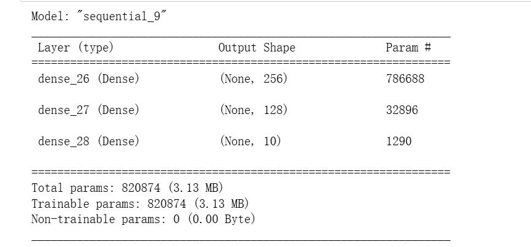
xxxxxxxxxx51#编译模型和训练网路2model.compile(optimizer='adam',loss='categorical_crossentropy',metrics=['accuracy'])3from tensorflow.keras.callbacks import EarlyStopping4stop = EarlyStopping(monitor="val_accuracy",min_delta=0.00001,patience = 3)5history=model.fit(train_x1,train_Y,epochs=5,verbose=2,validation_split=0.2,callbacks=[stop])
输出结果：

由于普通的网络结构无法训练数据，所以就采用CNN网络来训练数据
xxxxxxxxxx461#卷积神经网络的搭建与训练2from tensorflow.keras.layers import Conv2D,MaxPooling2D,BatchNormalization,Dropout,Dense,GlobalAveragePooling2D3from tensorflow.keras.preprocessing.image import ImageDataGenerator4from tensorflow import keras5from tensorflow.keras.models import Sequential6def create_enhanced_model(input_shape=(32,32,3)):7model = Sequential([8Conv2D(64,(3,3),activation='relu',padding='same',input_shape=input_shape),9BatchNormalization(),10Conv2D(64,(3,3),activation='relu',padding='same'),11MaxPooling2D((2,2)),12Dropout(0.25),13Conv2D(128,(3,3),activation='relu',padding='same'),15BatchNormalization(),16Conv2D(128,(3,3),activation='relu',padding='same'),17MaxPooling2D((2,2)),18Dropout(0.25),19Conv2D(128,(3,3),activation='relu',padding='same'),21BatchNormalization(),22Conv2D(128,(3,3),activation='relu',padding='same'),23MaxPooling2D((2,2)),24Dropout(0.25),2526GlobalAveragePooling2D(),27Dense(256,activation='relu'),28Dropout(0.5),29Dense(10,activation='softmax')30])31return model32# 数据增强生成器33datagen = ImageDataGenerator(34rotation_range=15,35width_shift_range=0.1,36height_shift_range=0.1,37horizontal_flip=True,38zoom_range=0.1,39fill_mode='nearest'40)41# 创建模型42model1 = create_enhanced_model(input_shape=(32, 32, 3))43model1.compile(optimizer='adam',loss='categorical_crossentropy',metrics=['accuracy'])44model1.summary()45stop = EarlyStopping(monitor="val_accuracy",min_delta=0.001,patience = 3)46history=model1.fit(train_x,train_Y,batch_size=128,epochs=100,verbose=2,validation_split=0.2,callbacks=[stop])
输出结果：